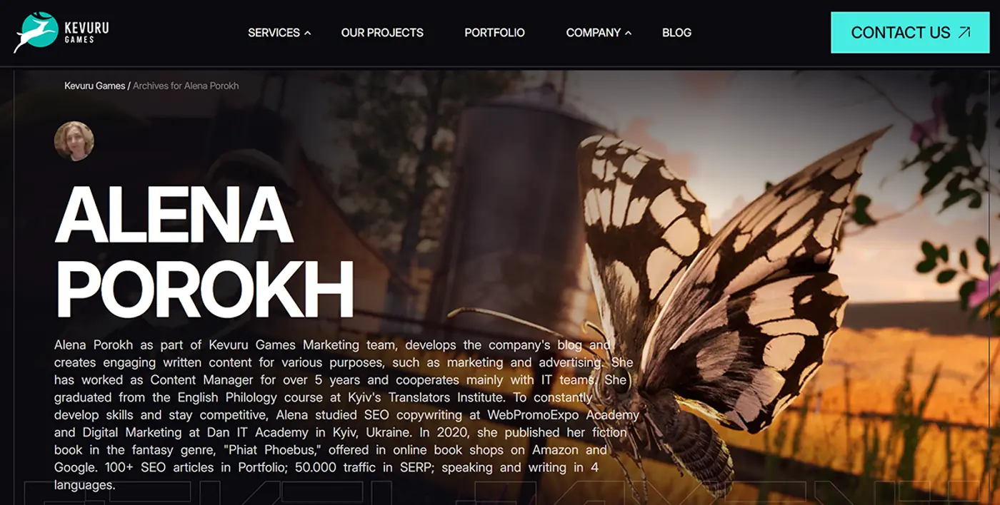

Kevuru Games: SEO content for a game art studio in two markets
Kevuru Games already had a website, a brand and a sales team. What it needed was precise content, written for a buyer in Los Angeles and a buyer in Warsaw who are not the same person. I did this work as the studio's in-house marketing copywriter, not as a client project.
Last updated: · By Alena Porokh

| Company | Kevuru Games |
|---|---|
| My role | In-house marketing copywriter (employee role, not a client engagement) |
| Industry | Game development & art outsourcing, B2B |
| Markets | USA and Poland |
| Language | English, one language read by two markets |
| What I did | SEO content, service pages, social media strategy, infographics |
| What I did not do | Website build, analytics, Polish localization, AI search |
| Live site | kevurugames.com (opens in a new tab) |
In short: one service page per discipline, written in the buyer's own vocabulary. Pipeline and scope are explained in infographics. The phrasing works for both US and Polish buyers.
What was the problem?
Outsourced game production is bought quietly, from a shortlist, before anyone gets in touch. The studio had the artists, but its pages did not describe the work the way a producer evaluates it.
A producer with a title to ship compares four studios. Have they done this exact kind of work? Does the portfolio style match the one in their head? Can the pipeline take the volume?
None of that is a design problem. All of it is a content problem.
A studio can have the artists and still lose the brief. It happens when the service page was written by someone who never sat in a production meeting.
What I wrote
I wrote SEO content, one service page per discipline, a social media strategy and infographics for the parts of the answer that prose handles badly.
- SEO content. Written against what the buyer actually types, not against the studio's internal service list.
- Service pages. One per discipline, each answering its own objection rather than repeating company boilerplate.
- Social media strategy. What to post, in what rhythm, and which posts support a sale rather than a follower count.
- Infographics. Pipeline, process and scope explained visually, for the parts a producer needs to pass on.
- Two-market phrasing. One English that reads correctly to a buyer in the USA and a buyer in Poland.
Why service pages precise enough to be quoted?
Nobody searches for "game development". Buyers search for the exact thing they need made, and a page that says "we do everything" disqualifies a studio on the spot.
Each service stands on its own terms, in the buyer's vocabulary:
- Game art. Concept, characters, environments and props, split by style, because a buyer arrives with a style in mind.
- 2D and 3D production. Two pipelines, two buyers and two budgets, so two sets of pages.
- Full-cycle development. The engagement that separates a studio from a contractor, and the one needing most reassurance about process.
- Porting and co-development. Searched in a different vocabulary, usually by someone mid-project and under a deadline.
- Platform and engine specifics. Unity, Unreal, mobile and console, often the filter the shortlist is built on.
- NDA, IP and pipeline questions. What a serious studio asks third, and what quietly decides it.
Why one English for two markets was harder than it sounds
An American publisher and a Polish studio search the same English words with different assumptions. They differ on pricing, time zones and what "full-cycle" includes.
Writing one page for both means choosing phrasing that survives both readings rather than flattering either. That took longer than any other part of the job.
Why infographics
A production pipeline explained in three paragraphs is a paragraph nobody finishes. The same pipeline as one diagram is what a producer screenshots and sends to their lead.
The infographics carry sequence, hand-off points and responsibility at each stage, the parts prose handles badly.
What was in scope, and what was not?
This checklist is shorter than the others, and honestly so. My remit was the content layer. The studio already had the rest.
What were the results?
I wrote the content but did not hold the analytics, so I publish no traffic or conversion figures of my own. The company's CMO describes the effect in her own words below.
What I can say myself is narrower. The service pages now describe distinct services in the buyer's vocabulary. Pipeline questions are answered before the contact form rather than on the first call.
What the company said
"She has been instrumental in creating high-quality content for our blog, landing pages, and social media channels. Her ability to craft compelling and engaging copy has not only increased our website traffic but also improved our conversion rates and social media engagement. Her writing style is clear, persuasive, and tailored to our target audience, which has greatly enhanced our brand’s voice and presence online."
The traffic and conversion effects are the CMO's own account, not figures I measured.
What would I do next?
A Polish-language track is the obvious gap. Selling into Poland in English reaches studios that already work in English and loses the rest.
After that, the infographics deserve wider distribution. The same diagrams could carry a LinkedIn series almost unchanged.
Why is a content-only role in this portfolio?
It shows the method does not need a full build or a client relationship to work. Inside someone else's company, on one layer, with no control over design or analytics, the same discipline applies.
Find out how demand is phrased, write to that, and answer the objection before the form. The layer is smaller. The thinking is identical.
Services related to this project
- SEO services: keyword-to-page mapping and SEO content for service businesses.
- AI SEO: answer-first service pages that AI assistants can quote accurately.
Good work, badly described?
The most expensive gap in B2B is usually not the design. It is a service page that could describe any of your competitors just as well.